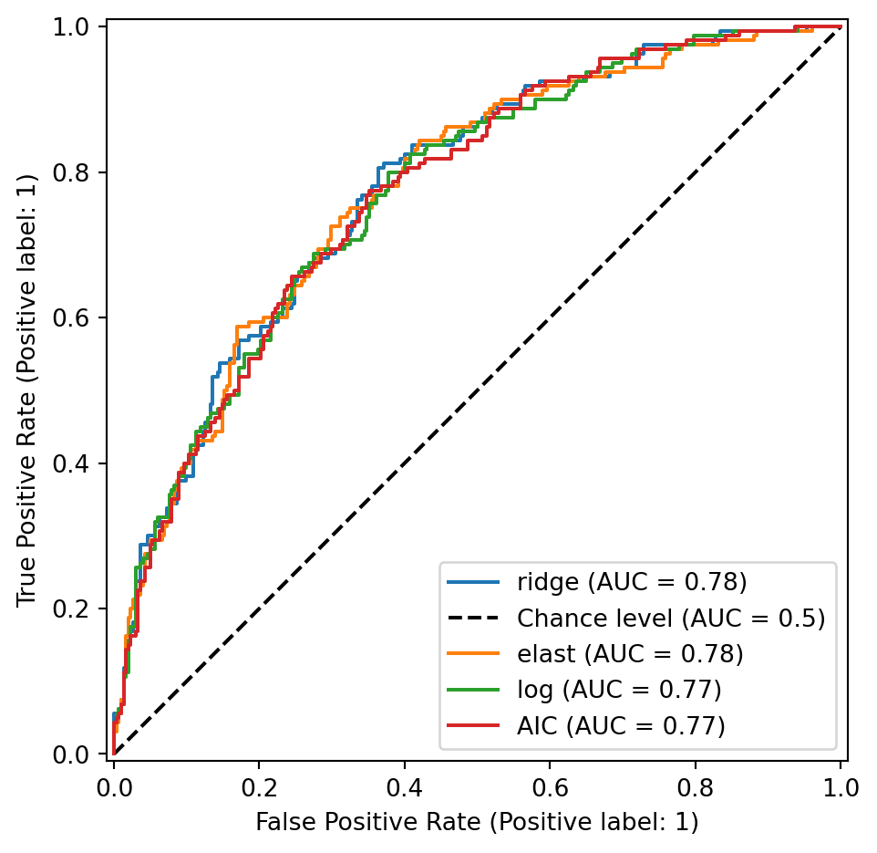

import pandas as pd; import numpy as np
import matplotlib.pyplot as plt
from sklearn.preprocessing import StandardScaler
from sklearn.linear_model import LogisticRegression, \
LogisticRegressionCV
from sklearn.pipeline import Pipeline
from sklearn.model_selection import StratifiedKFold
import sklearn.metrics as sklm
from patsy import dmatrix
import sys
sys.path.append('../modules')
import logistic_step_sk as lss 15 Comparaison des différentes méthodes en classification supervisée, étude de cas réels
Analyse des données chd
don = pd.read_csv("../donnees/SAh.csv", header=0, sep=",")
don.rename(columns={"chd": "Y"},inplace=True)
don.Y.value_counts()Y
0 302
1 160
Name: count, dtype: int64Y = don["Y"].to_numpy()
PROB = pd.DataFrame({"Y":Y,"log":0.0,"BIC":0.0,"AIC":0.0,
"ridge":0.0,"lasso":0.0,"elast":0.0})nb=10
skf = StratifiedKFold(n_splits=nb, shuffle=True, random_state=123)nomsvar = don.columns.difference(["Y"])
formule = "~" + "+".join(nomsvar)
X = dmatrix(formule, don, return_type="dataframe").\
iloc[:,1:].to_numpy()def grille(X, y, type = "lasso", ng=400):
scalerX = StandardScaler().fit(X)
Xcr= scalerX.transform(X)
l0 = np.abs(Xcr.transpose().dot((y-y.mean()))).max()/X.shape[0]
llc = np.linspace(0,-4,ng)
ll = l0*10**llc
if type=="lasso":
Cs = 1/ 0.9/ X.shape[0] / (l0*10**(llc))
elif type=="ridge":
Cs = 1/ 0.9/ X.shape[0] / ((l0*10**(llc)) * 100)
elif type=="enet":
Cs = 1/ 0.9/ X.shape[0] / ((l0*10**(llc)) * 2)
return Csfor app_index, val_index in skf.split(X,Y):
Xapp = X[app_index,:]
Xtest = X[val_index,:]
Yapp = Y[app_index]
log = LogisticRegression(penalty=None,solver="newton-cholesky").fit(Xapp,Yapp)
PROB.loc[val_index,"log"] = log.predict_proba(Xtest)[:,1]
### bic
choixbic = lss.LogisticRegressionSelectionFeatureIC(start=[], \
direction="forward",crit="bic").fit(Xapp,Yapp)
PROB.loc[val_index, "BIC"] = choixbic.predict_proba(Xtest)[:,1]
### aic
choixaic = lss.LogisticRegressionSelectionFeatureIC(start=[], \
direction="forward",crit="aic").fit(Xapp,Yapp)
PROB.loc[val_index, "AIC"] = choixaic.predict_proba(Xtest)[:,1]
### lasso
cr = StandardScaler()
Cs_lasso = grille(Xapp,Yapp, "lasso")
lassocv = LogisticRegressionCV(cv=10, penalty="l1", n_jobs=10,\
Cs=Cs_lasso, solver="saga", max_iter=2000)
pipe_lassocv = Pipeline(steps=[("cr", cr), ("lassocv", lassocv)])
pipe_lassocv.fit(Xapp,Yapp)
PROB.loc[val_index,"lasso"] = pipe_lassocv.predict_proba(Xtest)[:,1]
### elastic net
cr = StandardScaler()
Cs_enet = grille(Xapp,Yapp,"enet")
enetcv=LogisticRegressionCV(cv=10,penalty="elasticnet",n_jobs=10,\
l1_ratios=[0.5],Cs=Cs_enet,solver="saga",max_iter=2000)
pipe_enetcv = Pipeline(steps=[("cr", cr), ("enetcv", enetcv)])
pipe_enetcv.fit(Xapp,Yapp)
PROB.loc[val_index,"elast"] = pipe_enetcv.predict_proba(Xtest)[:,1]
### ridge
cr = StandardScaler()
Cs_ridge = grille(Xapp,Yapp,"ridge")
ridgecv = LogisticRegressionCV(cv=10, penalty="l2", \
Cs=Cs_ridge, max_iter=1000)
pipe_ridgecv = Pipeline(steps=[("cr", cr), ("ridgecv", ridgecv)])
pipe_ridgecv.fit(Xapp,Yapp)
PROB.loc[val_index,"ridge"] = pipe_ridgecv.predict_proba(Xtest)[:,1]round(PROB.iloc[0:4,:],3)| Y | log | BIC | AIC | ridge | lasso | elast | |
|---|---|---|---|---|---|---|---|
| 0 | 1 | 0.742 | 0.689 | 0.689 | 0.675 | 0.587 | 0.598 |
| 1 | 1 | 0.292 | 0.362 | 0.333 | 0.321 | 0.373 | 0.358 |
| 2 | 0 | 0.251 | 0.313 | 0.230 | 0.286 | 0.316 | 0.297 |
| 3 | 1 | 0.719 | 0.720 | 0.681 | 0.676 | 0.694 | 0.682 |
mc = pd.Series(0.0, index=PROB.columns[1:])
s = 0.5
for i in range(mc.shape[0]):
mc.iloc[i] = sklm.zero_one_loss(PROB.Y, PROB.iloc[:,i+1]>s)
round(mc,3)log 0.281
BIC 0.281
AIC 0.279
ridge 0.266
lasso 0.279
elast 0.271
dtype: float64On ajoute les méthodes régularisées avec sélection du paramètre par opposé de la log-vraisemblance :
PROB = PROB.assign(LassoL=0.0)
PROB = PROB.assign(RidgeL=0.0)
PROB = PROB.assign(EnetL=0.0)
for app_index, val_index in skf.split(X,Y):
Xapp = X[app_index,:-1]
Yapp = Y[app_index]
Xval = X[val_index,:-1]
# grille
Cs_lasso = grille(Xapp, Yapp, "lasso")
Cs_ridge = grille(Xapp, Yapp, "ridge")
Cs_enet = grille(Xapp, Yapp, "enet")
# instanciation
cr = StandardScaler()
lassocv = LogisticRegressionCV(cv=10, penalty="l1", n_jobs=10, Cs=Cs_lasso, solver="saga", max_iter=2000, scoring="neg_log_loss")
ridgecv = LogisticRegressionCV(cv=10, penalty="l2", n_jobs=10, Cs=Cs_ridge, max_iter=1000, scoring="neg_log_loss")
enetcv = LogisticRegressionCV(cv=10, penalty="elasticnet", l1_ratios = [0.5], n_jobs=10, Cs=Cs_enet, solver="saga", max_iter=2000, scoring="neg_log_loss")
pipe_lassocv = Pipeline(steps=[("cr", cr), ("lassocv", lassocv)])
pipe_ridgecv = Pipeline(steps=[("cr", cr), ("ridgecv", ridgecv)])
pipe_enetcv = Pipeline(steps=[("cr", cr), ("enet", enetcv)])
# fit brut
pipe_lassocv.fit(Xapp, Yapp)
pipe_ridgecv.fit(Xapp, Yapp)
pipe_enetcv.fit(Xapp, Yapp)
# prediction
PROB.loc[val_index,"LassoL"] = pipe_lassocv.predict_proba(Xval)[:,1]
PROB.loc[val_index,"RidgeL"] = pipe_ridgecv.predict_proba(Xval)[:,1]
PROB.loc[val_index,"EnetL"] = pipe_enetcv.predict_proba(Xval)[:,1]et par AUC
PROB = PROB.assign(LassoA=0.0)
PROB = PROB.assign(RidgeA=0.0)
PROB = PROB.assign(EnetA=0.0)
for app_index, val_index in skf.split(X,Y):
Xapp = X[app_index,:-1]
Yapp = Y[app_index]
Xval = X[val_index,:-1]
# grille
Cs_lasso = grille(Xapp, Yapp, "lasso")
Cs_ridge = grille(Xapp, Yapp, "ridge")
Cs_enet = grille(Xapp, Yapp, "enet")
# instanciation
cr = StandardScaler()
lassocv = LogisticRegressionCV(cv=10, penalty="l1", n_jobs=10, Cs=Cs_lasso, solver="saga", max_iter=2000, scoring="roc_auc")
ridgecv = LogisticRegressionCV(cv=10, penalty="l2", n_jobs=10, Cs=Cs_ridge, max_iter=1000, scoring="roc_auc")
enetcv = LogisticRegressionCV(cv=10, penalty="elasticnet", l1_ratios = [0.5], n_jobs=10, Cs=Cs_enet, solver="saga", max_iter=2000, scoring="roc_auc")
pipe_lassocv = Pipeline(steps=[("cr", cr), ("lassocv", lassocv)])
pipe_ridgecv = Pipeline(steps=[("cr", cr), ("ridgecv", ridgecv)])
pipe_enetcv = Pipeline(steps=[("cr", cr), ("enet", enetcv)])
# fit brut
pipe_lassocv.fit(Xapp, Yapp)
pipe_ridgecv.fit(Xapp, Yapp)
pipe_enetcv.fit(Xapp, Yapp)
# prediction
PROB.loc[val_index,"LassoA"] = pipe_lassocv.predict_proba(Xval)[:,1]
PROB.loc[val_index,"RidgeA"] = pipe_ridgecv.predict_proba(Xval)[:,1]
PROB.loc[val_index,"EnetA"] = pipe_enetcv.predict_proba(Xval)[:,1]round(PROB.iloc[0:4,:],2)| Y | log | BIC | AIC | ridge | lasso | elast | LassoL | RidgeL | EnetL | LassoA | RidgeA | EnetA | |
|---|---|---|---|---|---|---|---|---|---|---|---|---|---|
| 0 | 1 | 0.74 | 0.69 | 0.69 | 0.68 | 0.59 | 0.60 | 0.67 | 0.72 | 0.66 | 0.67 | 0.58 | 0.57 |
| 1 | 1 | 0.29 | 0.36 | 0.33 | 0.32 | 0.37 | 0.36 | 0.33 | 0.28 | 0.31 | 0.28 | 0.27 | 0.28 |
| 2 | 0 | 0.25 | 0.31 | 0.23 | 0.29 | 0.32 | 0.30 | 0.29 | 0.29 | 0.29 | 0.32 | 0.33 | 0.32 |
| 3 | 1 | 0.72 | 0.72 | 0.68 | 0.68 | 0.69 | 0.68 | 0.70 | 0.70 | 0.70 | 0.60 | 0.64 | 0.63 |
auc = pd.Series(0.0, index=PROB.columns[1:])
for i in range(auc.shape[0]):
auc.iloc[i] = sklm.roc_auc_score(PROB.Y, PROB.iloc[:,i+1])
round(auc.sort_values(ascending=False)[:6],3)ridge 0.779
elast 0.776
log 0.773
AIC 0.772
BIC 0.772
EnetL 0.770
dtype: float64fig, ax = plt.subplots(1,1)
noms = auc.sort_values(ascending=False)
for i, nom in enumerate(noms.index):
if i<4:
roc = sklm.RocCurveDisplay.from_predictions(PROB.Y, \
PROB.loc[:,nom], ax=ax, name=nom, plot_chance_level=(i==0))
fig.tight_layout()
noms = PROB.columns[1:]
matsB = pd.DataFrame({"seuil": pd.Series(0.0, index=noms)})
s = .5
for nom in noms:
matsB.loc[nom,"seuil"] = s
confmat = sklm.confusion_matrix(PROB.Y, PROB.loc[:,nom]>=s)
matsB.loc[nom, "tn"] = confmat[0,0]
matsB.loc[nom, "tp"] = confmat[1,1]
matsB.loc[nom, "fn"] = confmat[1,0]
matsB.loc[nom, "fp"] = confmat[0,1]
matsB.loc[nom,"sensitivity"] = confmat[1,1]/(confmat[1,1]+confmat[1,0])
matsB.loc[nom,"specificity"] = confmat[0,0]/(confmat[0,0]+confmat[0,1])
matsB.loc[nom,"accuracy"] = sklm.accuracy_score(PROB.Y, PROB.loc[:,nom]>=s)
print(matsB.round(3)) seuil tn tp fn fp sensitivity specificity accuracy
log 0.5 250.0 82.0 78.0 52.0 0.512 0.828 0.719
BIC 0.5 250.0 82.0 78.0 52.0 0.512 0.828 0.719
AIC 0.5 250.0 83.0 77.0 52.0 0.519 0.828 0.721
ridge 0.5 262.0 77.0 83.0 40.0 0.481 0.868 0.734
lasso 0.5 269.0 64.0 96.0 33.0 0.400 0.891 0.721
elast 0.5 268.0 69.0 91.0 34.0 0.431 0.887 0.729
LassoL 0.5 256.0 77.0 83.0 46.0 0.481 0.848 0.721
RidgeL 0.5 257.0 77.0 83.0 45.0 0.481 0.851 0.723
EnetL 0.5 260.0 76.0 84.0 42.0 0.475 0.861 0.727
LassoA 0.5 265.0 73.0 87.0 37.0 0.456 0.877 0.732
RidgeA 0.5 271.0 60.0 100.0 31.0 0.375 0.897 0.716
EnetA 0.5 269.0 68.0 92.0 33.0 0.425 0.891 0.729matsN = pd.DataFrame({"seuil": pd.Series(0.0, index=noms)})
nbr0 = don.Y.value_counts()[0]
for nom in noms:
tmp = PROB.loc[:,nom].sort_values(ascending=True)
s = (tmp.iloc[nbr0-1]+tmp.iloc[nbr0])/2
confmat = sklm.confusion_matrix(PROB.Y, PROB.loc[:,nom]>=s)
matsN.loc[nom,"seuil"] = s
matsN.loc[nom, "tn"] = confmat[0,0]
matsN.loc[nom, "tp"] = confmat[1,1]
matsN.loc[nom, "fn"] = confmat[1,0]
matsN.loc[nom, "fp"] = confmat[0,1]
matsN.loc[nom,"sensitivity"] = confmat[1,1]/(confmat[1,1]+confmat[1,0])
matsN.loc[nom,"specificity"] = confmat[0,0]/(confmat[0,0]+confmat[0,1])
matsN.loc[nom,"accuracy"] = sklm.accuracy_score(PROB.Y, PROB.loc[:,nom]>=s)
print(matsN.round(3)) seuil tn tp fn fp sensitivity specificity accuracy
log 0.431 236.0 94.0 66.0 66.0 0.588 0.781 0.714
BIC 0.444 235.0 93.0 67.0 67.0 0.581 0.778 0.710
AIC 0.441 236.0 94.0 66.0 66.0 0.588 0.781 0.714
ridge 0.418 237.0 95.0 65.0 65.0 0.594 0.785 0.719
lasso 0.428 236.0 94.0 66.0 66.0 0.588 0.781 0.714
elast 0.425 238.0 96.0 64.0 64.0 0.600 0.788 0.723
LassoL 0.442 235.0 93.0 67.0 67.0 0.581 0.778 0.710
RidgeL 0.432 235.0 93.0 67.0 67.0 0.581 0.778 0.710
EnetL 0.436 235.0 93.0 67.0 67.0 0.581 0.778 0.710
LassoA 0.431 236.0 94.0 66.0 66.0 0.588 0.781 0.714
RidgeA 0.418 236.0 94.0 66.0 66.0 0.588 0.781 0.714
EnetA 0.425 233.0 91.0 69.0 69.0 0.569 0.772 0.701matsY = pd.DataFrame({"seuil": pd.Series(0.0, index=noms)})
for nom in noms:
fpr, tpr, thr = sklm.roc_curve(PROB.Y, PROB.loc[:,nom])
ii = (tpr-fpr).argmax()
s = thr[ii]
matsY.loc[nom,"seuil"] = s
confmat = sklm.confusion_matrix(PROB.Y, PROB.loc[:,nom]>=s)
matsY.loc[nom, "tn"] = confmat[0,0]
matsY.loc[nom, "tp"] = confmat[1,1]
matsY.loc[nom, "fn"] = confmat[1,0]
matsY.loc[nom, "fp"] = confmat[0,1]
matsY.loc[nom,"sensitivity"] = tpr[ii]
matsY.loc[nom,"sensitivity"] = 1-fpr[ii]
matsY.loc[nom,"accuracy"] = sklm.accuracy_score(PROB.Y, PROB.loc[:,nom]>=s)
print(matsY.round(3)) seuil tn tp fn fp sensitivity accuracy
log 0.292 188.0 128.0 32.0 114.0 0.623 0.684
BIC 0.280 182.0 129.0 31.0 120.0 0.603 0.673
AIC 0.300 196.0 124.0 36.0 106.0 0.649 0.693
ridge 0.311 192.0 129.0 31.0 110.0 0.636 0.695
lasso 0.360 210.0 118.0 42.0 92.0 0.695 0.710
elast 0.362 212.0 116.0 44.0 90.0 0.702 0.710
LassoL 0.348 202.0 118.0 42.0 100.0 0.669 0.693
RidgeL 0.330 197.0 121.0 39.0 105.0 0.652 0.688
EnetL 0.278 173.0 133.0 27.0 129.0 0.573 0.662
LassoA 0.367 209.0 113.0 47.0 93.0 0.692 0.697
RidgeA 0.346 197.0 121.0 39.0 105.0 0.652 0.688
EnetA 0.364 205.0 115.0 45.0 97.0 0.679 0.693Feature engineering
Interactions
formuleI = "1 + (" + "+".join(nomsvar) + ")**2"
PROB = pd.DataFrame({"Y":Y,"log":0.0,"BIC":0.0,"AIC":0.0,
"ridge":0.0,"lasso":0.0,"elast":0.0})
Xinter = dmatrix(formuleI, don, return_type="dataframe").iloc[:,1:].to_numpy()
Xinter.shape(462, 45)cr = StandardScaler()
lassocv = LogisticRegressionCV(cv=10, penalty="l1", n_jobs=10, Cs=Cs_lasso, solver="saga", max_iter=2000)
enetcv = LogisticRegressionCV(cv=10, penalty="elasticnet", l1_ratios = [0.5], n_jobs=10, Cs=Cs_enet, solver="saga", max_iter=2000)
ridgecv = LogisticRegressionCV(cv=10, penalty="l2", n_jobs=10, Cs=Cs_ridge, max_iter=1000)
pipe_lassocv = Pipeline(steps=[("cr", cr), ("lassocv", lassocv)])
pipe_enetcv = Pipeline(steps=[("cr", cr), ("enetcv", enetcv)])
pipe_ridgecv = Pipeline(steps=[("cr", cr), ("ridgecv", ridgecv)])
nb=10
skf = StratifiedKFold(n_splits=nb, shuffle=True, random_state=1234)for app_index, val_index in skf.split(X,Y):
Xapp = Xinter[app_index,:]
Xtest = Xinter[val_index,:]
Yapp = Y[app_index]
### log
log = LogisticRegression(penalty=None,solver="newton-cholesky").fit(Xapp,Yapp)
PROB.loc[val_index,"log"] = log.predict_proba(Xtest)[:,1]
### bic
choixbic = lss.LogisticRegressionSelectionFeatureIC(start=[], \
direction="forward",crit="bic").fit(Xapp,Yapp)
PROB.loc[val_index, "BIC"] = choixbic.predict_proba(Xtest)[:,1]
### aic
choixaic = lss.LogisticRegressionSelectionFeatureIC(start=[], \
direction="forward",crit="aic").fit(Xapp,Yapp)
PROB.loc[val_index, "AIC"] = choixaic.predict_proba(Xtest)[:,1]
### lasso
cr = StandardScaler()
Cs_lasso = grille(Xapp,Yapp, "lasso")
lassocv = LogisticRegressionCV(cv=10, penalty="l1", n_jobs=10,\
Cs=Cs_lasso, solver="saga", max_iter=2000)
pipe_lassocv = Pipeline(steps=[("cr", cr), ("lassocv", lassocv)])
pipe_lassocv.fit(Xapp,Yapp)
PROB.loc[val_index,"lasso"] = pipe_lassocv.predict_proba(Xtest)[:,1]
### elastic net
cr = StandardScaler()
Cs_enet = grille(Xapp,Yapp,"enet")
enetcv=LogisticRegressionCV(cv=10,penalty="elasticnet",n_jobs=10,\
l1_ratios=[0.5],Cs=Cs_enet,solver="saga",max_iter=2000)
pipe_enetcv = Pipeline(steps=[("cr", cr), ("enetcv", enetcv)])
pipe_enetcv.fit(Xapp,Yapp)
PROB.loc[val_index,"elast"] = pipe_enetcv.predict_proba(Xtest)[:,1]
### ridge
cr = StandardScaler()
Cs_ridge = grille(Xapp,Yapp,"ridge")
ridgecv = LogisticRegressionCV(cv=10, penalty="l2", \
Cs=Cs_ridge, max_iter=1000)
pipe_ridgecv = Pipeline(steps=[("cr", cr), ("ridgecv", ridgecv)])
pipe_ridgecv.fit(Xapp,Yapp)
PROB.loc[val_index,"ridge"] = pipe_ridgecv.predict_proba(Xtest)[:,1]mc = pd.Series(0.0, index=PROB.columns[1:])
s = 0.5
for i in range(mc.shape[0]):
mc.iloc[i] = sklm.zero_one_loss(PROB.Y, PROB.iloc[:,i+1]>s)
round(mc.sort_values(ascending=True),3)AIC 0.245
BIC 0.251
ridge 0.260
elast 0.264
lasso 0.268
log 0.288
dtype: float64Polynôme
Xquanti = don.drop(columns="Y").\
select_dtypes(include=[np.number]).to_numpy()
Xcar = Xquanti**2
Xcub = Xquanti**3
formule = "~" + "+".join(nomsvar)
X = dmatrix(formule, don, return_type="dataframe").\
iloc[:,1:].to_numpy()
Xpol = np.concatenate((X, Xcar, Xcub), axis=1)
Xpol.shape(462, 25)cr = StandardScaler()
lassocv = LogisticRegressionCV(cv=10, penalty="l1", n_jobs=10, Cs=Cs_lasso, solver="saga", max_iter=2000)
enetcv = LogisticRegressionCV(cv=10, penalty="elasticnet", l1_ratios = [0.5], n_jobs=10, Cs=Cs_enet, solver="saga", max_iter=2000)
ridgecv = LogisticRegressionCV(cv=10, penalty="l2", n_jobs=10, Cs=Cs_ridge, max_iter=1000)
pipe_lassocv = Pipeline(steps=[("cr", cr), ("lassocv", lassocv)])
pipe_enetcv = Pipeline(steps=[("cr", cr), ("enetcv", enetcv)])
pipe_ridgecv = Pipeline(steps=[("cr", cr), ("ridgecv", ridgecv)])
nb=10
skf = StratifiedKFold(n_splits=nb, shuffle=True, random_state=1234)for app_index, val_index in skf.split(X,Y):
Xapp = Xpol[app_index,:]
Xtest = Xpol[val_index,:]
Yapp = Y[app_index]
### log
log = LogisticRegression(penalty=None,solver="newton-cholesky").fit(Xapp,Yapp)
PROB.loc[val_index,"log"] = log.predict_proba(Xtest)[:,1]
### bic
choixbic = lss.LogisticRegressionSelectionFeatureIC(start=[], \
direction="forward",crit="bic").fit(Xapp,Yapp)
PROB.loc[val_index, "BIC"] = choixbic.predict_proba(Xtest)[:,1]
### aic
choixaic = lss.LogisticRegressionSelectionFeatureIC(start=[], \
direction="forward",crit="aic").fit(Xapp,Yapp)
PROB.loc[val_index, "AIC"] = choixaic.predict_proba(Xtest)[:,1]
### lasso
cr = StandardScaler()
Cs_lasso = grille(Xapp,Yapp, "lasso")
lassocv = LogisticRegressionCV(cv=10, penalty="l1", n_jobs=10,\
Cs=Cs_lasso, solver="saga", max_iter=2000)
pipe_lassocv = Pipeline(steps=[("cr", cr), ("lassocv", lassocv)])
pipe_lassocv.fit(Xapp,Yapp)
PROB.loc[val_index,"lasso"] = pipe_lassocv.predict_proba(Xtest)[:,1]
### elastic net
cr = StandardScaler()
Cs_enet = grille(Xapp,Yapp,"enet")
enetcv=LogisticRegressionCV(cv=10,penalty="elasticnet",n_jobs=10,\
l1_ratios=[0.5],Cs=Cs_enet,solver="saga",max_iter=2000)
pipe_enetcv = Pipeline(steps=[("cr", cr), ("enetcv", enetcv)])
pipe_enetcv.fit(Xapp,Yapp)
PROB.loc[val_index,"elast"] = pipe_enetcv.predict_proba(Xtest)[:,1]
### ridge
cr = StandardScaler()
Cs_ridge = grille(Xapp,Yapp,"ridge")
ridgecv = LogisticRegressionCV(cv=10, penalty="l2", \
Cs=Cs_ridge, max_iter=1000)
pipe_ridgecv = Pipeline(steps=[("cr", cr), ("ridgecv", ridgecv)])
pipe_ridgecv.fit(Xapp,Yapp)
PROB.loc[val_index,"ridge"] = pipe_ridgecv.predict_proba(Xtest)[:,1]mc = pd.Series(0.0, index=PROB.columns[1:])
s = 0.5
for i in range(mc.shape[0]):
mc.iloc[i] = sklm.zero_one_loss(PROB.Y, PROB.iloc[:,i+1]>s)
round(mc.sort_values(ascending=True),3)BIC 0.266
lasso 0.266
ridge 0.271
elast 0.277
AIC 0.279
log 0.286
dtype: float64Splines
nomsquanti = don.columns[np.isin(don.dtypes, ["float64", \
"int64"])].difference(["Y"])
nomsquali = don.columns[np.isin(don.dtypes, ["object", \
"category"])].difference(["Y"])
formule = "~" + "+".join(nomsquali)
Xspline = dmatrix(formule, don, return_type="dataframe").\
iloc[:,1:].to_numpy()
for i in nomsquanti:
xi = don.loc[:,i].quantile([0.25, 0.5, 0.75])
formule = "-1 + bs(" + i + ",knots=xi, degree=3)"
BX = dmatrix(formule, don, return_type="dataframe").to_numpy()
Xspline = np.concatenate((Xspline, BX), axis=1)
Xspline.shape(462, 49)cr = StandardScaler()
lassocv = LogisticRegressionCV(cv=10, penalty="l1", n_jobs=10, Cs=Cs_lasso, solver="saga", max_iter=2000)
enetcv = LogisticRegressionCV(cv=10, penalty="elasticnet", l1_ratios = [0.5], n_jobs=10, Cs=Cs_enet, solver="saga", max_iter=2000)
ridgecv = LogisticRegressionCV(cv=10, penalty="l2", n_jobs=10, Cs=Cs_ridge, max_iter=1000)
pipe_lassocv = Pipeline(steps=[("cr", cr), ("lassocv", lassocv)])
pipe_enetcv = Pipeline(steps=[("cr", cr), ("enetcv", enetcv)])
pipe_ridgecv = Pipeline(steps=[("cr", cr), ("ridgecv", ridgecv)])
nb=10
skf = StratifiedKFold(n_splits=nb, shuffle=True, random_state=1234)for app_index, val_index in skf.split(X,Y):
Xapp = Xspline[app_index,:]
Xtest = Xspline[val_index,:]
Yapp = Y[app_index]
### log
log = LogisticRegression(penalty=None,solver="newton-cholesky").fit(Xapp,Yapp)
PROB.loc[val_index,"log"] = log.predict_proba(Xtest)[:,1]
### bic
choixbic = lss.LogisticRegressionSelectionFeatureIC(start=[], \
direction="forward",crit="bic").fit(Xapp,Yapp)
PROB.loc[val_index, "BIC"] = choixbic.predict_proba(Xtest)[:,1]
### aic
choixaic = lss.LogisticRegressionSelectionFeatureIC(start=[], \
direction="forward",crit="aic").fit(Xapp,Yapp)
PROB.loc[val_index, "AIC"] = choixaic.predict_proba(Xtest)[:,1]
### lasso
cr = StandardScaler()
Cs_lasso = grille(Xapp,Yapp, "lasso")
lassocv = LogisticRegressionCV(cv=10, penalty="l1", n_jobs=10,\
Cs=Cs_lasso, solver="saga", max_iter=2000)
pipe_lassocv = Pipeline(steps=[("cr", cr), ("lassocv", lassocv)])
pipe_lassocv.fit(Xapp,Yapp)
PROB.loc[val_index,"lasso"] = pipe_lassocv.predict_proba(Xtest)[:,1]
### elastic net
cr = StandardScaler()
Cs_enet = grille(Xapp,Yapp,"enet")
enetcv=LogisticRegressionCV(cv=10,penalty="elasticnet",n_jobs=10,\
l1_ratios=[0.5],Cs=Cs_enet,solver="saga",max_iter=2000)
pipe_enetcv = Pipeline(steps=[("cr", cr), ("enetcv", enetcv)])
pipe_enetcv.fit(Xapp,Yapp)
PROB.loc[val_index,"elast"] = pipe_enetcv.predict_proba(Xtest)[:,1]
### ridge
cr = StandardScaler()
Cs_ridge = grille(Xapp,Yapp,"ridge")
ridgecv = LogisticRegressionCV(cv=10, penalty="l2", \
Cs=Cs_ridge, max_iter=1000)
pipe_ridgecv = Pipeline(steps=[("cr", cr), ("ridgecv", ridgecv)])
pipe_ridgecv.fit(Xapp,Yapp)
PROB.loc[val_index,"ridge"] = pipe_ridgecv.predict_proba(Xtest)[:,1]mc = pd.Series(0.0, index=PROB.columns[1:])
s = 0.5
for i in range(mc.shape[0]):
mc.iloc[i] = sklm.zero_one_loss(PROB.Y, PROB.iloc[:,i+1]>s)
round(mc.sort_values(ascending=True),3)ridge 0.279
AIC 0.286
elast 0.290
log 0.292
lasso 0.297
BIC 0.305
dtype: float64